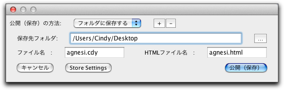

インタラクティブなWebページを作る
シンデレラの面白い機能に、インタラクティブなWebページを作ることができるというものがあります。 このソフトで描ける図はすべて、表示が多岐にわたっていても、HTML についての知識なしに簡単にインタラクティブなWebページとして保存することができます。
この章では、3つの場合について説明します。 まずは簡単な例、そしてアニメーションの例、最後に練習問題の作り方です。 また、このようにして作られたHTMLファイルには詳細な情報が記述されていますので、 これらの情報は後からHTMLファイルを追加編集する(たとえば、説明文を加える)際に役に立ちます。
HTMLファイルとは
もしインターネットやその技術的背景に慣れ親しんでいるか、または逆に技術的な事 柄に煩わされたくないというのであればこの部分は飛ばして読んでください。 この節では、その先の記述の理解のために幾つかの用語を説明しています。
HTML とはWebページを表示するための記述言語です。 HTMLファイルはテキストエディタで作成・編集することができます。 しかし「HTMLエディタ」と呼ばれる種類のソフトウェアを使うととても簡単に作ることができます。 あなたが見ているWebページについて、それがどのようなHTMLファイルなのかをみるには、 お使いのブラウザのメニューの表示からソースまたはページのソース を選んでください(メニューの項目名はブラウザの種類やバージョンによって違います)。
HTMLファイルは、 タグ と呼ばれる幾つかの決められた書式によってほとんどが構成されています。 たとえばこのようになっています。
⟨p⟩この文章は ⟨b⟩太字⟨/b⟩や ⟨i⟩italic⟨/i⟩体を含んでいます。⟨/p⟩ ⟨p⟩この図 ⟨img src="pappos.gif"⟩ は ⟨a href="http://www.cinderella.de"⟩Cinderella⟨/a⟩を使って描かれました!⟨/p⟩
この文章は、2つの段落からできています。 そしてそれぞれは ⟨p⟩...⟨/p⟩という記号に囲まれています。 最初の段落では2つのタグが用いられていて、これにより、特別なフォントで表示することを指定します。 最初のタグ ⟨b⟩...⟨/b⟩, は太字を、 2つ目のタグではイタリックを指定しています。 これを見れば、HTMLファイルの書式の簡単な形式を理解できるでしょう． 特別な書式を必要とする部分は、 (⟨何か⟩) というタグで始まり、 (⟨/何か⟩)というタグで終了します。
2つ目の段落では画像ファイルを挿入 する方法を示しています。 このときは、 ⟨img⟩ というタグを用います。 このタグは終了するタグを必要としませんが、タグといっしょに (src=...) というオプション(追加事項)が必要で、この部分で画像ファイルを指定します。 もう1つのタグは ハイパーリンクと呼ばれるとても便利なHTMLのタグです。 ⟨a⟩...⟨/a⟩に囲まれた部分をWebページ上でクリックすることにより、そのページへジャンプすることができるような仕組みになっています。
ハイパーリンクで指定するホームページの場所は、URLと呼ばれる「インターネットの住所」で書きます。 これは特有の書式であって、アクセスするための手順を与えているのです。 WWWでは、ほとんどの通信はハイパーテキスト転送プロトコル (HyperText Transfer Protocol)という手順で行われていて、これを短く、httpと書くのです。 http://と書き始めることによって、これがインターネットの住所であることを示しています。 ただし、このhttp://は省略可能です。というのは、ほとんど のブラウザがhttp://で始まることを暗に仮定しているからです。 他にもたとえばftp://で始まるURLもあります。 これはファイル転送プロトコル(File Transfer Protocol)の略です。 ほかにも、file://で始まると、使用しているコンピュータ のハードディスクのファイルを指し示す約束になっています。
特別なタグの例として、Webページの上で Java プログラムを動かすためのものがあります。 Javaが使えるようになっているブラウザが appletというタグに出会うと、code オプションで示されているJavaプログラムを読み込みます。 プログラムの結果を表示する範囲を指定するには、 widthとheightの2つのオプションを用います。 ここでのプログラムはアプレットと呼ばれ、スタンドアローンの (他のソフトの助けなしに自分だけで完結している)ソフトウェアと区別されてこのように呼ばれます。 語源は「小さなアプリケーション(=ソフトウェア)」ですが、なかなかどうして普通のアプ リケーションと同じように力を発揮します。
アプレットのタグにはarchiveというオプションを追加することが可能です。 これはJavaプログラムが格納されているファイルを示します。 シンデレラの場合はcindyrun.jarというファイルです。 このファイルの中には、シンデレラでの作図に必要なプログラムがすべて入っています。 ですから、たとえばシンデレラで次のようなタグが生成されます。
⟨applet code = "de.cinderella.CindyApplet"
archive = "cindyrun.jar"
width = 435
height = 231⟩
⟨param...
⟨/applet⟩
シンデレラでHTMLファイルを保存すると、 というタグがたくさん書かれています。これはたとえば作図ファイル名など、アプレットにわたすた めのパラメータがここに記述されています。 ですから、シンデレラで保存したHTMLファイルのこの部分は、その意味がわからないうちは変更しないほうがいいでしょう。
簡単な例
ここでは、シンデレラを用いたホームページの最も簡単な作成方法を示しましょう。 普通に作図をしている時はいつでも、
 ボタンを押してHTMLフ ァイルに保存することができます。 そして、あなたが今見ている表示とまったく同じ図をホームページ上で見ることができます。 (訳註：そして、動かすモードと同じようにホームページ上で頂点を動かすことが可能です。) 画面上で複数の表示画面を出している場合には、別々のアプレットとしてホームページが作成されます。 これら複数のアプレットは、アプレットのパラメータのなかの カーネル ID を使って連動しています。
ボタンを押してHTMLフ ァイルに保存することができます。 そして、あなたが今見ている表示とまったく同じ図をホームページ上で見ることができます。 (訳註：そして、動かすモードと同じようにホームページ上で頂点を動かすことが可能です。) 画面上で複数の表示画面を出している場合には、別々のアプレットとしてホームページが作成されます。 これら複数のアプレットは、アプレットのパラメータのなかの カーネル ID を使って連動しています。作図自体はHTMLファイルに保存されているわけではありません。作図は ".cdy "という拡張子を持つ 別ファイルに保存されます。 ホームページを作成しようとするときには、作図ファイルを保存するように指示が出ます(まだ 保存されていない場合に限り)。 アプレットは作図ファイルがホームページのHTMLファイルと同じディレクトリにあることを前提とします。
 |
| 書き出しダイアログ |
次に、ホームページのファイル名を入力するように指示が出ます。 このファイルは ".html" や ".htm"で終わるようなファイル名でなければなりません。どちらにするほうがよいのかは、その時に作っているほかのホームページの ファイルに合わせればよいでしょう。 シンデレラのデフォルトは".html" です。これでHTMLファイルを保存するという作業は終わりです。 このファイルを Java1.1 対応のブラウザで見るためには、ランタイム・ライブラリというものをHTMLファイルと同じディレクトリにコピーする必要があります。
詳しく言えば、このホームページのappletというタグでは、同じディレクトリに"cindyrun2.jar" というファイルがあることを前提に動作します。 このファイルが「ライブラリ」です。 ですから、ライブラリがそのページと同じディレクトリにない場合は、ホームページ上に図は描かれません．このファイルは、HTMLファイルと同じディレクトリに生成されます。一般に公開する場合には、そのホームページと同じディレクトリに"cindyrun2.jar"というファイルをアップロードしてください。
もしあなたが試してみてうまくいかなかったら、まずは次の点をチェックしてください。
- 拡張子が ".htm" や ".html" のファイルが存在して読みとり可能になっているかどうか。
- HTMLファイルの という部分で参照している名前のファイルがHTML ファイルと同じディレクトリにあり、かつ読みとり可能 になっているかどうか。かつそのファイルがシンデレラで読み込めるファイルであるかどうか。
- "cindyrun.jar" というファイルを改変することなく同じディレクトリにコピーしているかどうか。 また、HTMLファイルのアプレットのところで、cindyrun.jarというファイルを呼び出しているかどうか。
- 使っているブラウザがJava-2に対応しているかどうか。 Internet Explorer, Firefox, Safari の最近の版、あるいは類似したブラウザを想定しています。
HTMLファイルで表示された作図はいつも動かすモードになっています。 つまり、可動要素 をホームページ上でドラッグ により動かすことができます。 もし、ホームページ上で動かされたくない点があるならば、それをインスペクタの設定でピンで留めるを用いればよいのです。
アニメーションのホームページを保存する
自動的にアニメーションするホームページの作り方は、上の例と同様に簡単です。シンデレラの初期の版と異なり、シンデレラ２では、アニメーションと普通の作図との区別をしません インスペクタ の "アニメーションの自動実行" を使って、ユーザーがあなたのページを訪問したときに、アニメーションが自動的に実行されているようにすることができます。
アニメーションのホームページを保存する場合に心に止めておかなければならないのは、ホームページを見 る人のコンピュータがあなたのコンピュータより遅い機種を使うかもしれない、ということです。 ですから、アニメーションのスピードを程よく調整しましょう． (訳註：このコメントは、最先端のコンピュータを使っている人へのアドバイスです。 昔ながらのコンピュータを大事に使っている人がアニメーションのホームページを保存す る場合には、すこし遅めに調節しておくとよいでしょう．)
インタラクティブな練習問題を作る
シンデレラ1.4では、学生向けのインタラクティブな練習問題のホームページを作ることができました。 シンデレラ2.6でも同じようなことができます。 インタラクティブな練習問題を作るを参照してください。
あとでHTMLファイルを編集する
あなたが作った図や練習問題をHTMLファイルに保存したものをブラウザでみると、最低限の内容しかそこにはありません． シンデレラにはWebページを作るためのHTMLエディタとしての特別の機能はありません． 生成されたHTMLファイルは、ほかのHTMLエディタを用いて編集することができます。
アプレットの幅・高さのパラメータは必要に応じて変更可能です。 シンデレラが出力するHTMLファイルでは、操作ボタンを表示するアプレ ットや出題者からのメッセージを表示するアプレットの大きさは(ボタンの数やメッセージの量にか かわらず)いつも一定です。したがってこれらを見栄えよく表示するためには、後でHTMLファイル 内でパラメータを変更することが大切です。 一方、作図を表示するアプレットの大きさはHTMLに出力するときのシンデレラの描画面 の大きさに応じて変化しますので、HTMLに出力する前に描画面の大きさを調節する方がずっと簡単でしょう。
アプレットのパラメータのうち、kernelIDの値を変えてはいけません． これはアプレット同士のデータのやり取りに不可欠なもので、これを変えると全体がうまく動かなくなる可能性があります。 記述する順序や記述する場所は変えてもかまいません． また、シンデレラで保存した2つのHTMLファイルをつなげることによって、1 つのページに異なる図を掲載することも可能です。
もし、あなたのホームページでシンデレラで作っているHTMLファイルがいろいろなディレクトリにいくつもちらばっているとしましょう。 このような場合、ライブラリcindyrun2.jarを1つですませることができます。 このためには、すべてのアプレットの中のarchiveというパラメータの値を単なる「cindyrun2.jar」だけではなく、その保存している位置も含めて記述する必要があります。 例えば以下のようにURLを絶対パスで記述しておけばよいでしょう。
＜applet ・・・ archive="http://www.yourweb.edu/directory/cindyrun.jar" ・・・＞
配布に関するライセンス事項
シンデレラを購入した際に、インタラクティブなホームページを動かすためのライブラリを再配布するライセンスも同時に付与されます。 もちろん、インタラクティブなホームページでのライブラリの使用は制限されています。 この使用制限について手短に述べますが、法的に拘束力のある文章は、ドイツ語で書かれたソフトウェアの使用許諾について. の合意書であることを心にとめておいてください。
最初に、あなたはシンデレラを使って自分で作ったインタラクティブなホームページを公開する際、金銭を得てはいけません。 つまり、これを販売したり、商業目的のオンラインサービスに用いたりしてはいけないのです。 教育の目的で用いることはできます (配布者教育によって収入を得ているのはかまいません)． シンデレラを用いた書籍やCD-ROMを出版したい場合には、原著者に文面にて許可を得なければなりません。
あなたがあなたのライセンスについて確信できないときはいつでも、書面で、または、電子メールを通して我々と連絡をとってください。シンデレラのWebサイトに連絡方法があります。
Page last modified on Saturday 25 of February, 2012 [10:56:36 UTC].
The original document is available at
http://doc.cinderella.de/tiki-index.php?page=HTML%20ExportJ